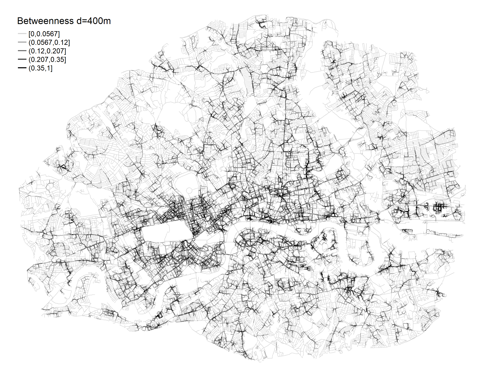
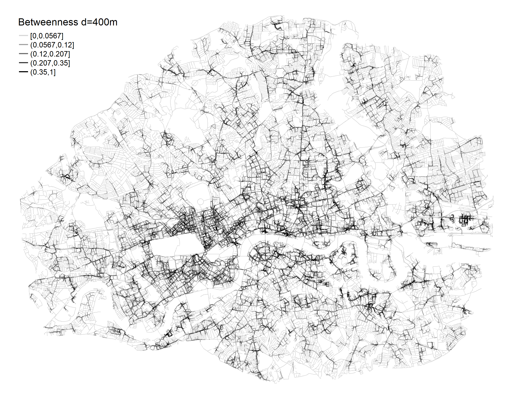

Reclaiming space for people: a street network analysis

Overview
This project examined whether the superblocks model introduced in Barcelona and designed for a city built on a grid structure, could be implemented in organically grown city like London. By investigating centralities of the street segments, I proposed an approach to study street network for reorganisation of the city’s streets into the superblocks model.
Motivation
Streets accommodate various activities and the way people interact with them shapes their daily lives. Car-orientated planning popular during modernism, pushed people off the streets and resulted in high levels of environmental pollution and decreased levels of active travel. However, cites are shifting towards more sustainable and people-orientated environments. In 2016, Barcelona introduced superblocks, an innovative strategy that reclaims public space for people and reduces motorised transport, relocating main traffic to roads surrounding the superblocks. The model promotes sustainable mobility and enables more space for urban greening.
Methods
The main purpose of this research is to examine whether superblocks model proposed for Barcelona by Rueda (2019) can be implemented in London. Provided the challenges of identifying superblocks in a pattern of streets with an irregular layout, I proposed a quantitative method based on street segments’ centrality measures and clustering classification. I used weighted closeness, betweenness and modified eigenvector centrality measures to study the types and importance of each segment within London street network.
 

Main findings
The results demonstrate hierarchical structure of street segments within the study area and suggest the existence of multifunctional streets in terms of transport links and places of activities. This study suggests a basic road network for traffic circulation and highlights areas where superblocks should be prioritised. Based on open-data, I offered a methodology for studying street network of various cities for the implementation of the superblock model and design of car-free pedestrian zones. This project demonstrated that by using a set of centrality measures and clustering, it is possible to characterise urban street types and their importance for the whole system.